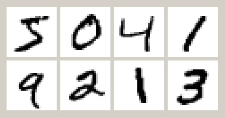
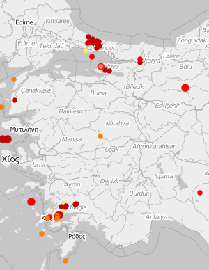
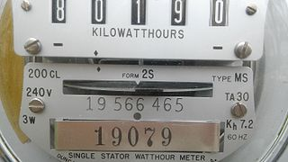

Yeni başlayanlar için veri kümeleri : Çiçekler, bebekler, filmler
Veri analizine yeni başladınız diyelim. Gayretlisiniz, R, Python, pandas, SQL, ne bulursanız öğrenmeye çalışıyorsunuz. Malum, en iyi öğrenme yaparak öğrenmedir. Oysa okuduğunuz kitaplar veya ders malzemelerindeki veriler ya çok basit, ya da çok yapay. Bazı veri tabanları ise dişinizi geçiremeyeceğiniz kadar büyük ve karmaşık. Size gereken, ne çok küçük ve basit, ne de alelade bir laptopla işlenemeyecek kadar büyük bir veri kümesi.
Bu yazıda, kolayca indirebileceğiniz, “temiz”, veri işlemeye başlangıç seviyesinde kullanabileceğiniz birkaç veri kümesini listeleyeceğiz.

Ünlü istatistikçi R.A. Fisher’in 1938’de yayınladığı bir makalesinden alınan küçük bir veri kümesi. Süsen (iris) çiçeğinin üç türünden alınan 50’şer numunenin çiçek ve taç yapraklarının uzunluk ve genişliklerinin ölçümlerini barındırıyor. Klasik, temel ders kitabı örneği olan bir veri kümesidir. Veri görselleme ve sınıflandırma işlemlerinde kullanabilirsiniz.

Kara talihli Titanic’in ilk ve son seferindeki yolcu listesi. İsimler, ünvanlar, yaş, cinsiyet, hangi mevkide seyahat ediyor, eşi, çocukları, kardeşi yanında mı? Hayatta kalmış mı?
Veri düzenleme, gruplandırma, ve tahmin için kullanabilirsiniz.

Her biri 28x28 pikselden oluşan, gri tonlarında el yazısı rakamlar. 250 kişiden alınan toplam 60.000 numune mevcut. Bir veri satırının ilk sütununda resimde gösterilen rakam, kalan 784 sütunda ise piksellerin satır satır yanyana konmuş halde gri tonlarının sayı değerleri var.
Güdümlü öğrenme ve tahmin algoritmalarında ilk adım olan bir veri kümesidir.
ABD’de 1880’den başlayarak günümüze kadar, yeni doğanlar için yapılan sosyal güvenlik kartı başvurularından derlenen isimlerin sayımı. Veri kümesinin içinde her bir yıl için ayrı bir dosyada, o yıl doğan çocuklara verilen isimler, çocuğun cinsiyeti, ve her bir ismin kaç kere verildiği yazılı.
Çoklu dosyalardan veri derlemek, zamanda değişimleri görsellemek, verileri filtrelemek, trendleri incelemek için uygun.

Kandilli Rasathanesi’nin web sitesindeki form arayüzüyle istediğiniz tarih aralığında, istediğiniz enlem ve boylamlar içindeki sismik hareketlerin dökümünü alabilirsiniz. Depremlerin zaman ve mekandaki dağılımlarını görselleyebilir, Gutenberg-Richter yasasını teyit edebilirsiniz.
Çeşitli kaynaklardan sızdırılmış ve halka açık hale gelmiş parolaların listesi. Dosyada 2 milyon tekil parola mevcut. Parolaların yapısını inceleyebilir, harf-rakam-işaret dağılımına bakabilirsiniz. Metin işleme çalışmaları için uygun.
Movielens film değerlendirme sitesine gelen kullanıcıların istedikleri filmlere verdiği puanlamaları içeren bir veri kümesi. Ana küme sürekli büyümekte; ama araştırma amaçları için sabit olarak tutulan bazı alt kümeler de var. 1000 kullanıcının 1700 filme verdiği 100.000 ayrı puanı içeren “100k” kümesiyle başlayabilirsiniz. Filmlerin bilgileri ile kullanıcıların demografik verilerini birleştirerek ilginç bağlantılar yakalayabilir, bir tavsiye sistemi oluşturmak üzerinde çalışabilirsiniz.

Bir evin dört yıl harcadığı elektriğin dakika dakika kaydedildiği iki milyon satırlık bir veri dosyası. Bütün evde kullanılan anlık gücün yanında, ayrı odalarda tüketilen enerji de kaydedilmiş. Boş kalmış satırlar da var. Büyükçe bir veri dosyasını işlemenin inceliklerini keşfedebilir, zaman serisini analiz etmek, saatlik/günlük/haftalık/mevsimlik değişimleri görmek gibi işlemler yapabilirsiniz.
1994 ABD nüfus sayımı verisi içinden alınmış, gelir seviyesi tahmini için kullanılan bir veri kümesi. 50.000’e yakın yetişkinin demografik bilgilerini, ve gelirlerinin 50.000$ üzerinde olup olmadığının bilgisini içeriyor. Veri analizi, gruplandırma, güdümlü öğrenme işlemleri için kullanılabilir.